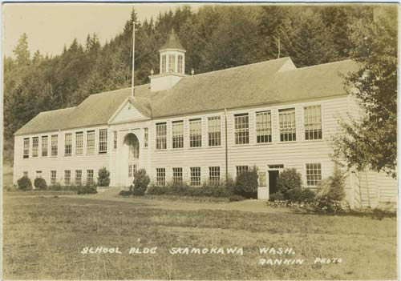

by Irene Martin
Vista Park details added by Robert Kulp
Skamokawa has both a long history and prehistory; it was the site of an Indian village over two thousand years ago. The name Skamokawa means “smoke on the water,” so called after the fog which drifts down the three valleys opening onto the town and the Columbia River. Skamokawa was also the name of the last chief of the Wahkiakum Indians who's home was located on the West end of the beach now known as The Cove. In 1851, Chief Skamokawa sold the land later to become Wahkiakum County to the federal government. Chief Skamokawa died in 1857 and is buried in the Cathlamet Pioneer Cemetery under the name Chief Wahkiakum.
The first white settlement began in Skamokawa in 1844 when Capt. John Couch built a small trading post near Chief Skamokawa’s house. The exact location of these buildings is under some debate but it is thought to have been located at the West end of Vista Parks beach now known as The Cove. This area was named Bayview in 1873 by Robert Hume who operated a salmon cannery there. The permanent settlement of Skamokawa began in the 1860’s and 1870’s with the development of logging and salmon fishing. In 1873, the town was large enough to have a post office, operated by Albert Moe, who's family operated an orchard of apples, cherries and plums on the site that is now Vista Park. The hill that outlines the North section of the park is known as Moe Hill.
The real boom, however, took place in the period 1890-1910, when logging, commercial fishing, and dairy farming were at their height. In 1891, the year the Skamokawa Eagle (now the Wahkiakum County Eagle) was founded, the town had a hotel, shipyard, cannery, hall, two churches, two saloons, two butchers, two real estate dealers, a carpenter, cooper, notary public, barber, and three large shingle mills. In 1896, the Proebstal Brothers opened a creamery, which in 1898 was purchased by the Skamokawa Farmers’ Creamery Association. It was the first cooperative creamery in the State of Washington—probably in the Pacific Northwest—and specialized in the making of sweet butter which won prizes at a number of Pacific coast expositions. Another important industry was the Columbia River Lumber & Manufacturing Company which, in 1892, had an annual output of 3,000,000 board feet.
The town’s decline began with the depression, as the natural resource-based industries were hardest hit. In addition, the building of the Ocean Beach Highway through Skamokawa in 1933-34 changed the focus of the town, once known as “Little Venice”, from the water to the road. The creamery was sold in 1943 and was closed.
Remnants of what was once a thriving Columbia River town still remain. The village still uses the original names which characterized its various portions such as Swedetown, Sleepy Hollow, Pleasant Point, Moe Hill, and Missouri Flats. In 1976, Skamokawa was named a National Historic District.
The Skamokawa School districts only school house was located against Moe Hill. It was built in 1926 and replaced Redmen Hall as the towns only school. It operated until 1967 when Skamokawa School District consolidated with Cathlamet. The building was torn down in 1974.
